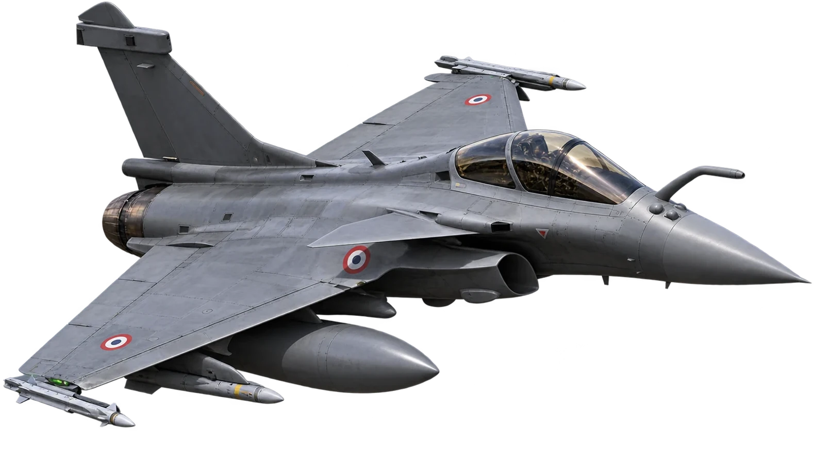

Rocket League game imagery
VelocityRL
I train Rocket League bots through self-play in RocketSim, where I compare PPO and V-trace.
RocketSim / RLGym / Python / C++
Simulation. Bots. Experiments.

My personal projects in game bots, simulation and GPU computing.
Explore projectsWhat I’m working on.
I train Rocket League bots through self-play in RocketSim, where I compare PPO and V-trace.
RocketSim / RLGym / Python / C++
 Trackmania game imagery
Trackmania game imagery
A Trackmania simulator for testing physics, trajectories and racing controllers outside the game.
Explore the sourceI test which CUDA workloads run on AMD GPUs under Windows and check that the results hold up.
Explore the sourceI mainly work in C++, Rust and Python. For bot training and controller tests, simulation lets me compare results without relaunching the game for each run.